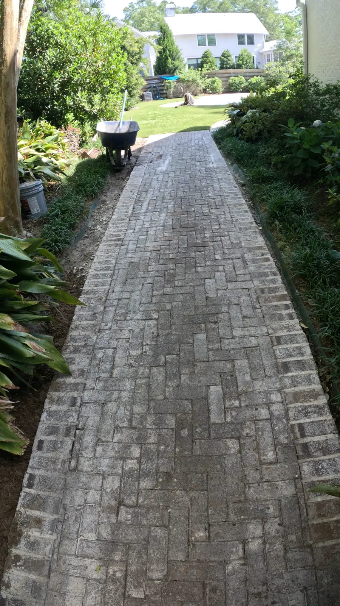
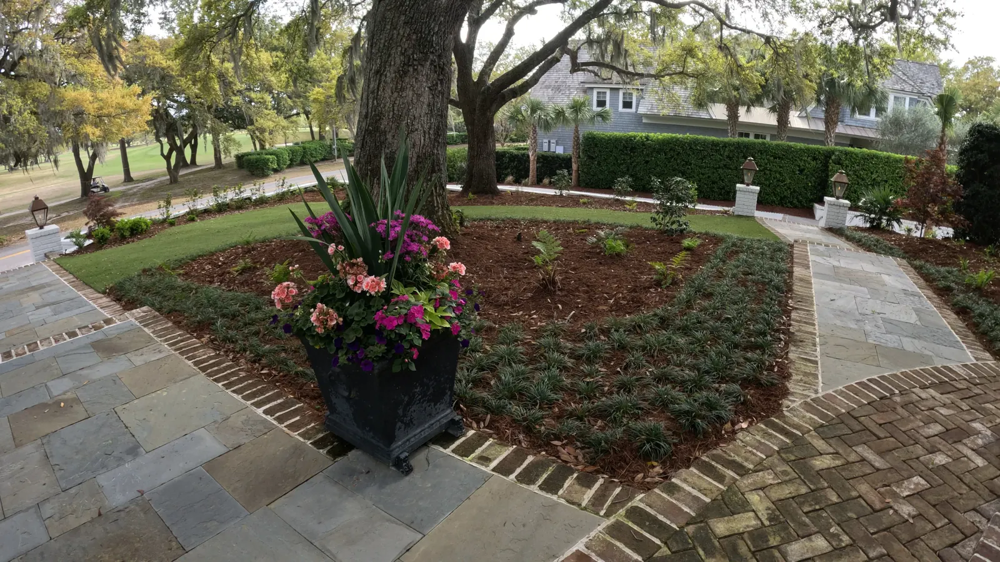

Charleston, SC Landscape Design & Build
Landscaping Charleston, SC


Local Expertise for Lowcountry Landscapes
Charleston’s climate, architecture, and soil conditions are like nowhere else. That’s why choosing a local landscaping company that truly understands the area is critical. At Cramers Landscaping, we have decades of combined experience working across Charleston’s historic districts, suburban neighborhoods, and coastal communities.
We know how to design for:
- Humid summers and heavy rainfall
- Salt-tolerant plants near the water
- Drainage challenges in older properties
- Historic preservation guidelines
- Soil types from sandy to clay-heavy
Our work is tailored not just to your vision—but to Charleston’s unique landscape challenges and character.
Full-Service Landscaping in Charleston
Whether you own a primary home, rental property, or new construction, we provide everything needed to elevate your outdoor space.Landscape Installation
We install sod, native plants, trees, mulch beds, and more. Our landscape installs are designed with longevity and seasonal performance in mind.
Hardscape Installation

Build a custom patio, retaining wall, or walkway that complements your home’s layout and improves outdoor living. We use materials that pair beautifully with Charleston’s historic and coastal styles.
Irrigation Systems Installation
Keep your landscape healthy year-round with a zoned irrigation system, smart controller, and proper drainage layout.
Pruning & Bed Care After Install
We are not a mowing company. For clients we have built large projects for, we come back to prune and shape the planting as it was designed to grow — keeping hedge lines where the plan put them and the layering readable as things fill in.
Drainage & Grading
We solve pooling, erosion, and runoff issues common in Charleston with targeted grading and French drain installations.
Mulch & Bed Edging
Freshen your beds with pine straw, hardwood mulch, or decorative stone—installed properly and edged for clean lines
Site Structures
Add fencing, pergolas, garden structures, and custom patio accents to create functional outdoor spaces that enhance property value and usability.
Historic Property Landscape Experience
Many Charleston properties are located in protected historic zones that require sensitivity and precision.
Our team has experience working with clients near:
- South of Broad
- Harleston Village
- Wagener Terrace
- The Battery
- Cannonborough-Elliotborough
We use historically appropriate materials, plantings, and building methods to enhance your property while respecting architectural standards.
Whether you’re refreshing the front bed of a 100-year-old home or adding a new patio to a carriage house, we’ll work with your aesthetic, HOA, or local guidelines to get it right.
Residential And Investment Properties

We serve a wide range of property types in Charleston, including:
- Primary homes
- New developments and spec builds
Our Service Commitment
Cramers Landscaping isn’t just another crew with a mower. We are full-service professionals who value:
- Clear communication and written quotes
- On-time scheduling and project coordination
- Experienced, background-checked crews
- Ongoing customer relationships
You’ll work with a dedicated account manager and foreman who oversee your job from start to finish—and we’ll keep you updated every step of the way.
Serving the Greater Charleston Area
Our Charleston-area landscaping services include:
- Downtown Charleston
- West Ashley
- James Island
- Johns Island
- Daniel Island
- The Peninsula
- Avondale
- Hampton Park
- Riverland Terrace
Not sure if you’re in our service zone? Contact us—we’re happy to confirm and set up a consultation.

Bundled Services Equal Better Value
Most Charleston homeowners benefit from a bundled landscaping plan that combines:
- Landscape Installation
- Irrigation Installation
- Hardscape Design
This approach ensures all aspects of your landscape work together seamlessly—drainage, grading, planting, and aesthetics.
We can create a phased plan to help you budget and build over time while maintaining a unified vision.
Frequently Asked Questions
Do you provide free estimates in Charleston?
Yes. We offer free on-site consultations throughout the Charleston metro area.
Are you licensed and insured?
Absolutely. We carry all required licenses, workers’ comp, and general liability insurance.
Do you work with HOAs and historic review boards?
Yes. We are familiar with Charleston’s permitting and HOA requirements and can help guide the approval process if needed.
What is your average project timeline?
Timelines vary based on scope, but most installations and hardscape projects are completed in 5–10 business days.
Explore Everything We Build
From plantings and drainage to patios, pergolas and outdoor kitchens, see the full range of services we offer in Charleston and across the Lowcountry.